건전하고 지속적인
음주 교류를 지향합니다.
‘매주술권장협회’는
친목과 교류 중심의 민간 커뮤니티로,
정기 모임과 C-Level Inner Circle Meetup 등을 통해
회원 간 네트워크 활동을 이어가고 있는 단체입니다.
협회 연혁
2017
- 매주술권장협회 비공식 창립
- 새벽 7시 해산 사례 최초 기록
- 풍덕천동 일대 비공식 회합 정례화
2020
- 코로나19 확산에 따른 비대면 짠 시스템 시범 운영
- 허근영 전무이사, 볼링 기반 친목 프로그램 연구 착수
2021
- 송병완 상무이사, ‘걸어서 일본 한 바퀴’ 프로젝트 공식 시작
2022
- 가위바위보를 통한 아이스크림 몰빵 제도 시범 운영
2023
- 정철현 감사 건배후미섭취감찰관 겸임 발령
2024
- 한창희 제1대 협회장 취임
-
협회 운영 체계 전면 개편
(단순 실수에도 즉결 처형 가능한 내부 대응 프로토콜 세계 최초 도입) - 정철현 감사 주도 하에 건배 미섭취 집중 단속기간 시작
2025
- 김성민 해외지부 운영총괄 임명 및 미국 장기체류 시작
- 필라델피아지부 설립 (약 3,000평 규모)
- 송병완 상무이사, 일본 현지 주점 동선 분석 보고서 내부 공유
- 정철현 감사, 회합 현장 안전관리 유공 협회장 표창 수상
- 텍사스지부 설립 (5,000평 규모)
- 이너서클 밋업 출범
협회칙
- 안주만 집중 공략하는 자, 즉결 처형
- 술자리 중 음료를 단독 주문하는 자,
사상 검증 진행 후 즉결 처형 - “나 먼저 들어갈게”를 선언하는 자,
밀정으로 간주 후 즉결 처형 - 멀쩡하면서 취한 척 연기하는 자, 즉결 처형
- 술자리 결제대행자에게
12시간 이내 송금하지 않는 자,
이자 20% 추징 및 엉덩이로 이름쓰기 - 텐션을 저해하는 표정·행동·발언이 적발된 자,
즉결 처형
인재상
- 적당한 주량과 분위기의 가치를 이해할 줄 아는 자
- “한잔 하자”를 먼저 제안할 수 있는
애주가 마인드를 장착한 자 - 술자리 리액션 및 호응 능력이 우수한 자
- 술김에도 선을 넘지 않는 성숙함을 갖춘 자
- 늦은 귀가에도 큰 문제가 없는
올빼미 생활 패턴을 보유한 자
협회 임원진
한창희
협회장 · 소주 3병
매주술권장협회 협회장
국내 유일 주량평가 및 만취등급 심사위원
2028년 베스트셀러 "짠한 내가 싫어서 짠하기로 했다." 저자
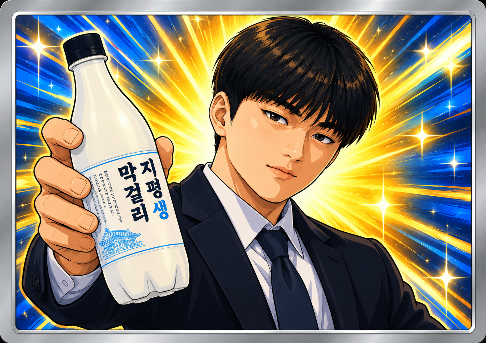
협회 인증카드 No.01 · 협회장
국내 유일 주량평가 및 만취등급 심사위원. 2028년 베스트셀러 「짠한 내가 싫어서 짠하기로 했다」 저자.
김성민
해외지부 운영총괄 · 소주 4병
매주술권장협회 해외지부 운영총괄
텍사스지부 부장
음주문화체육관광부장관 겸임
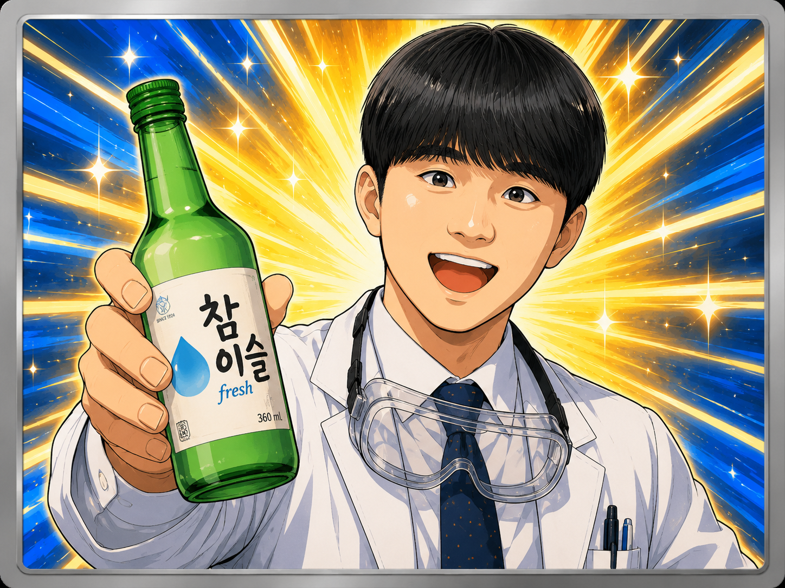
협회 인증카드 No.02 · 해외지부 운영총괄
텍사스지부 부장, 음주문화체육관광부장관 겸임. 국경을 넘나드는 네트워킹을 전담한다.
정철현
감사 · 소주 2.5병
매주술권장협회 감사
건배후미섭취감찰관 겸임
협회칙 위반자 현장 즉결 대응, 현장 안전관리 및 순찰 유공(협회장상 표창)
건어물안주와 소주의 상관관계 애널리스트
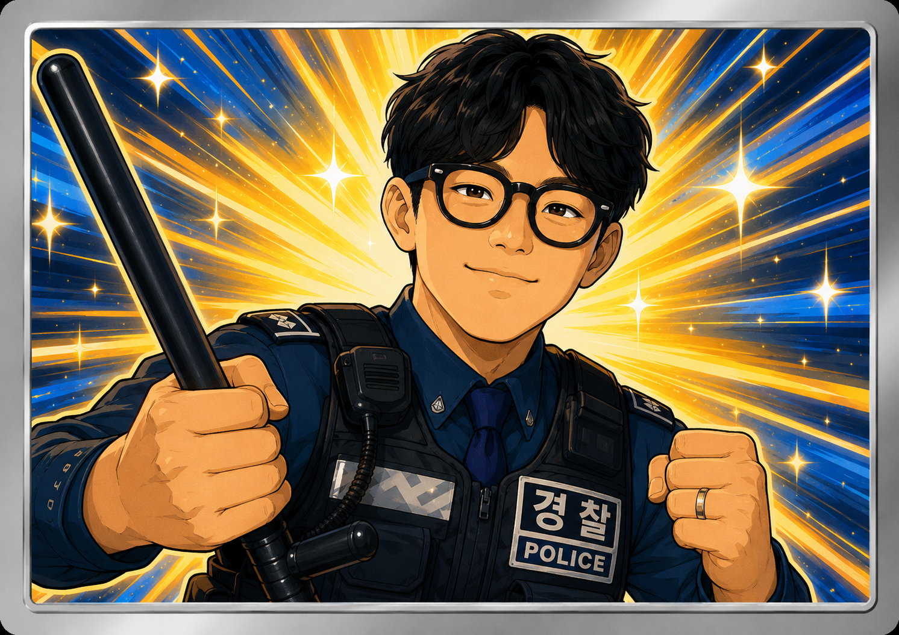
협회 인증카드 No.03 · 감사
협회칙 위반자 현장 즉결 대응, 현장 안전관리 및 순찰 유공(협회장상 표창). 건어물안주와 소주의 상관관계 애널리스트.
송병완
상무이사 · 소주 2병
매주술권장협회 상무
한국음주건강관리센터 안주조합 수석연구원 겸임
걸어서 일본 한 바퀴 진행자 (2021~)
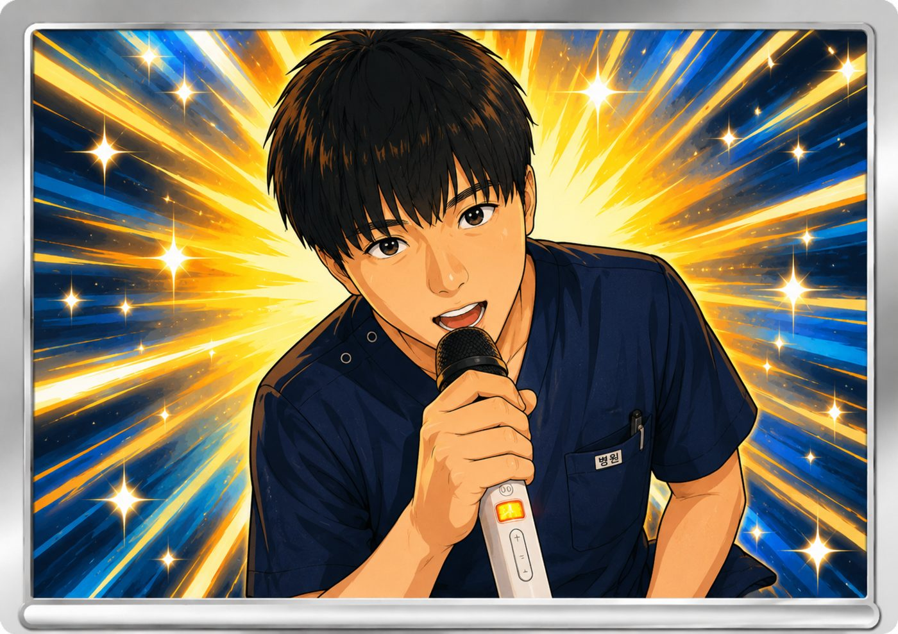
협회 인증카드 No.04 · 상무이사
한국음주건강관리센터 안주조합 수석연구원 겸임. 걸어서 일본 한 바퀴 진행자(2021~).
허근영
전무이사 · 소주 2병
매주술권장협회 전무
한국음주건강관리센터 센터장 겸임
음주 후 볼링 퍼포먼스 변화에 대한 사례 연구 제1저자
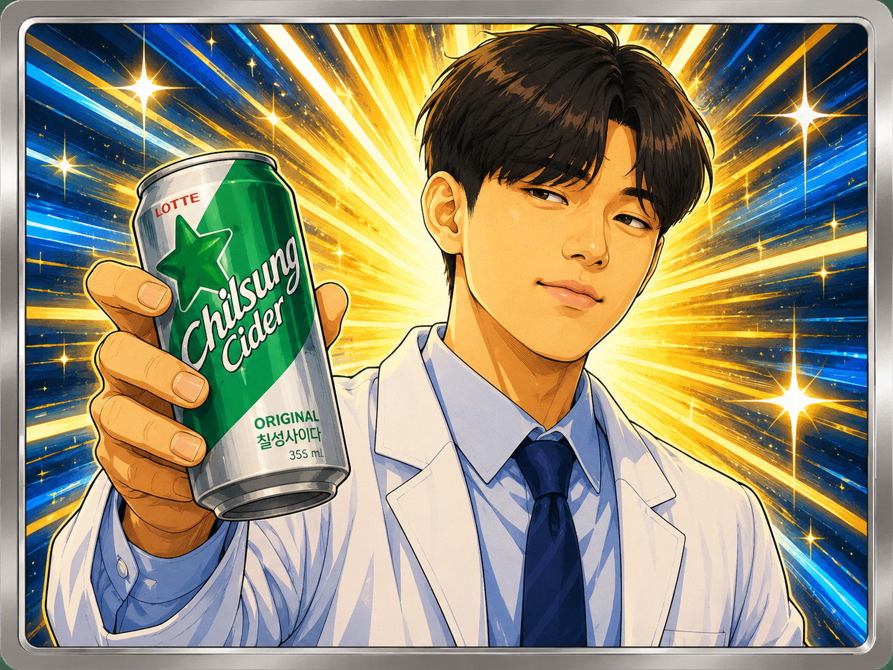
협회 인증카드 No.05 · 전무이사
한국음주건강관리센터 센터장 겸임. 음주 후 볼링 퍼포먼스 변화에 대한 사례 연구 제1저자.
최민규
상근부회장 · 소주 2병
매주술권장협회 상근부회장
밑잔탐지 및 즉시대응팀 수석담당관
정기모임 운영, 의전 및 협회운영총괄
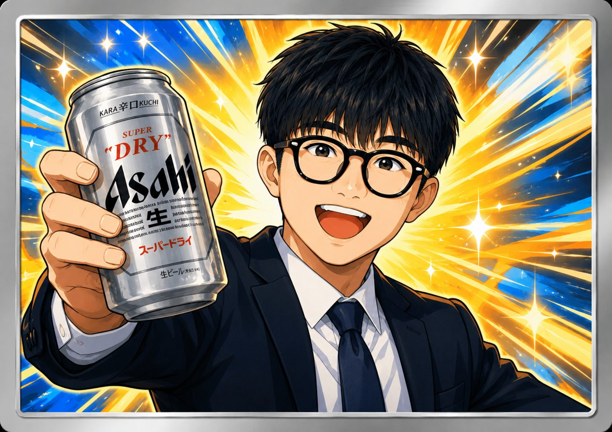
협회 인증카드 No.06 · 상근부회장
밑잔탐지 및 즉시대응팀 수석담당관. 정기모임 운영, 의전 및 협회운영총괄.
협회 보도자료
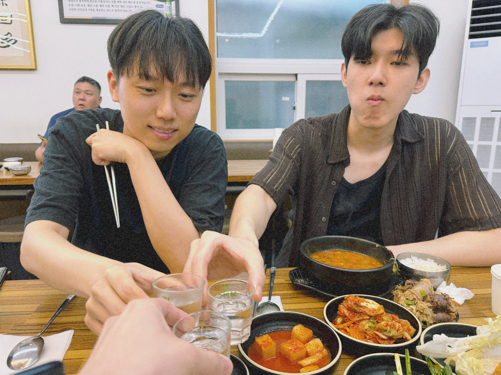
입력 : 2026년 7월 24일
[현장스케치] 운영진 3인, 비밀 회동 후 지역경제·미래인재 현장답사 실시
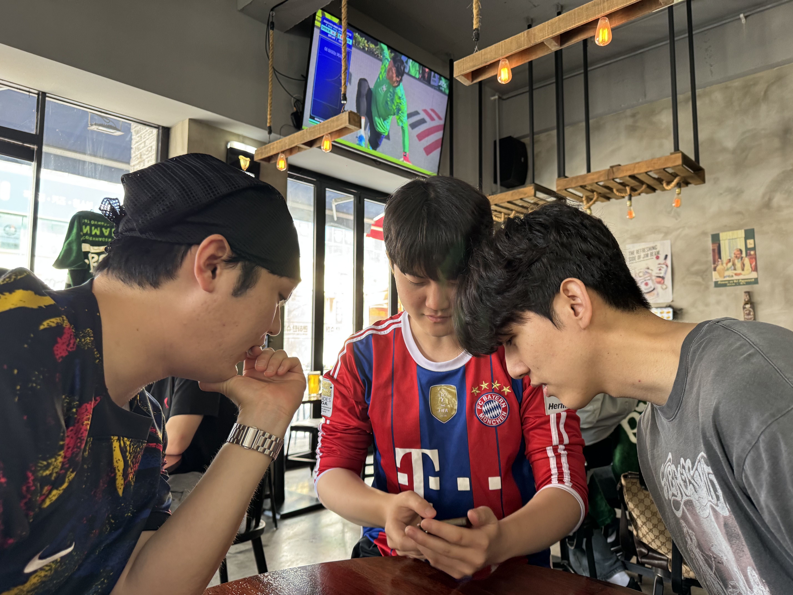
입력 : 2026년 6월 20일
[현장스케치] 핵심 운영진, 수지구청역 집결… 월드컵 응원전 끝내 멕시코에 석패
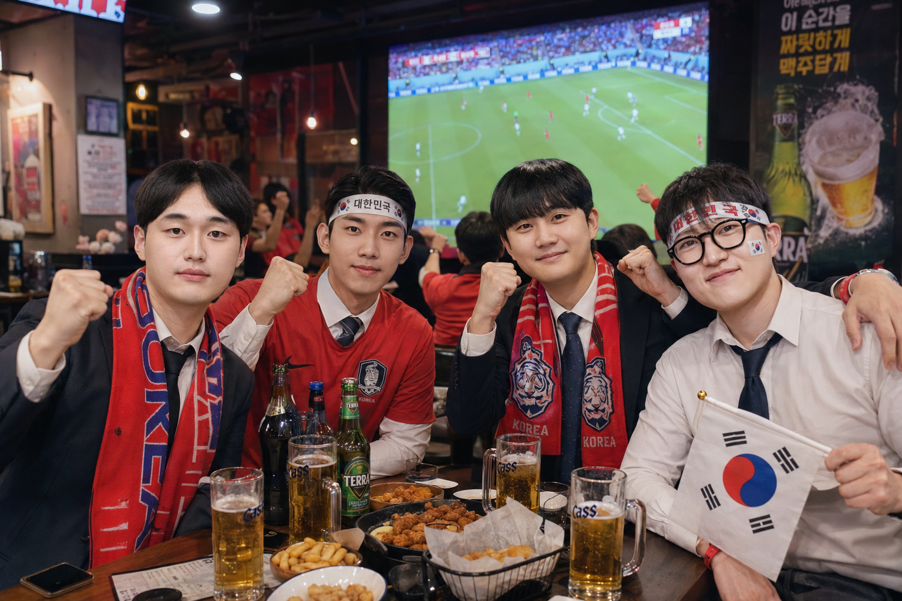
입력 : 2026년 6월 16일
[단독] 아이스크림 민주주의 논란은 어디로... 핵심 임원진 월드컵 응원 현장 방문설에 회원들 들썩
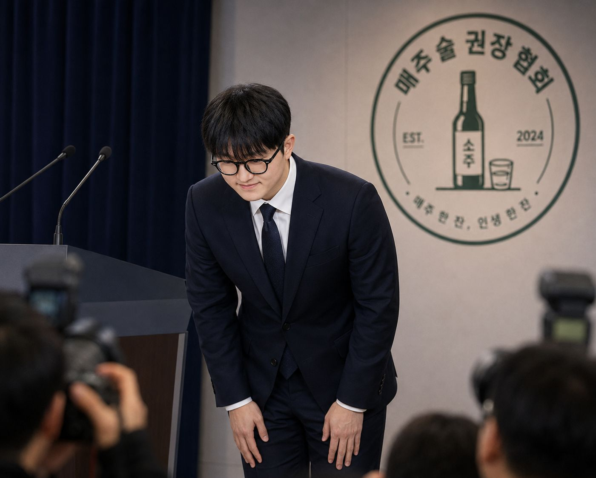
입력 : 2026년 6월 12일
[속보] 고개 숙인 최민규 상근부회장... "모든 책임은 저에게"
입력 : 2026년 6월 11일
[단독] '아이스크림 배분에 문제 있었다'... 6·10 회합 참석자들 잇단 제보
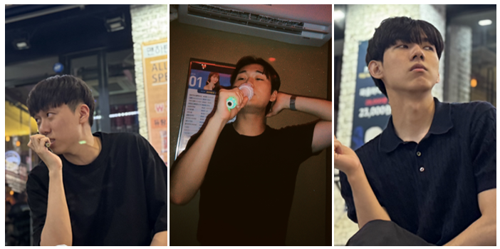
입력 : 2026년 6월 10일
[현장스케치] 삶의 질 향상 방안 논의… 가정 구성 및 직업 안정성 확보 전략 공유
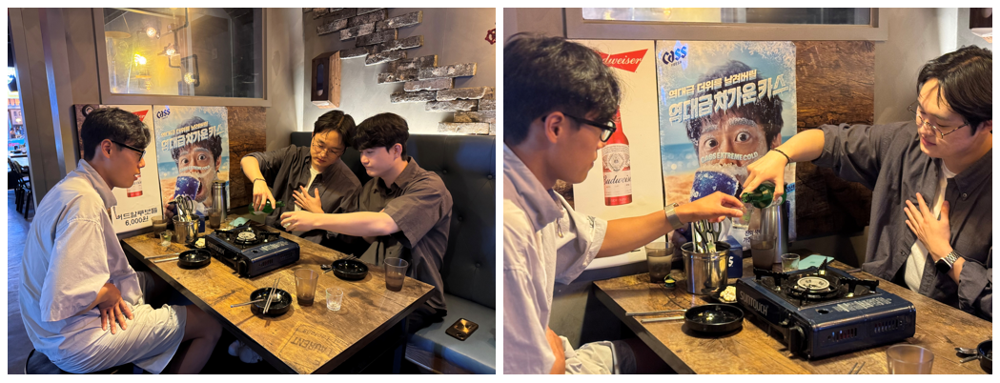
입력 : 2026년 6월 3일
[현장스케치] 매주술권장협회 핵심 운영진 회합 성료… 허근영 전무이사 공백 속 결속력 재확인
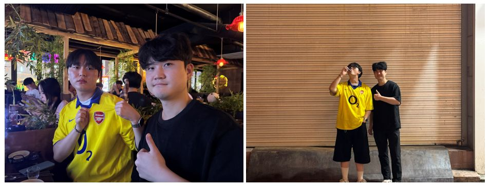
입력 : 2026년 5월 31일
[현장스케치] 한창희 협회장, 챔피언스리그 결승 현장 응원에도 아스날 준우승
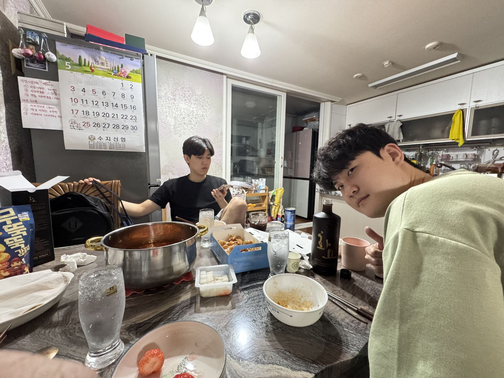
입력 : 2026년 5월 25일
[단독] 허근영 전무이사 자택서 비공개 후속 회합 진행

입력 : 2026년 5월 23일
[현장스케치] 이너서클 밋업 성료…핵심 운영진 결속 강화
입력 : 2026년 5월 22일
[뉴스특보] 허근영 전무이사, 외부 일정 마치고 ‘이너서클 밋업’ 합류 예정

입력 : 2026년 5월 20일